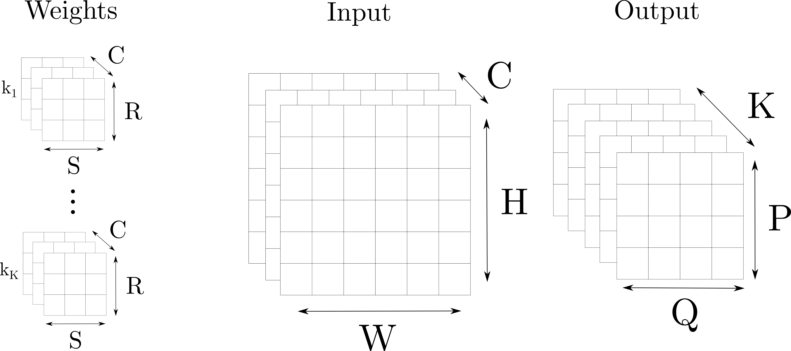
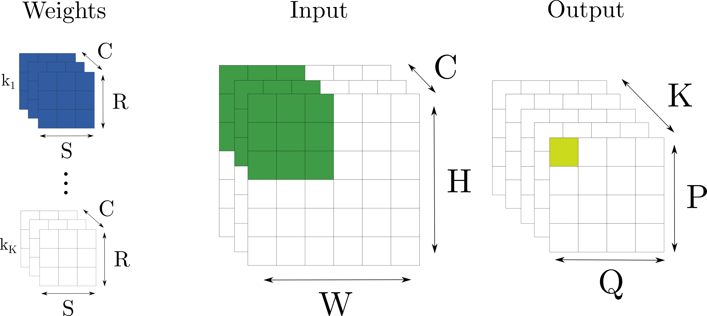
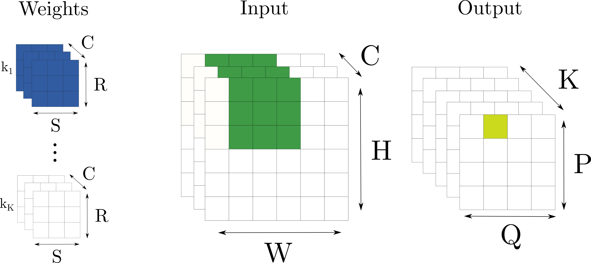
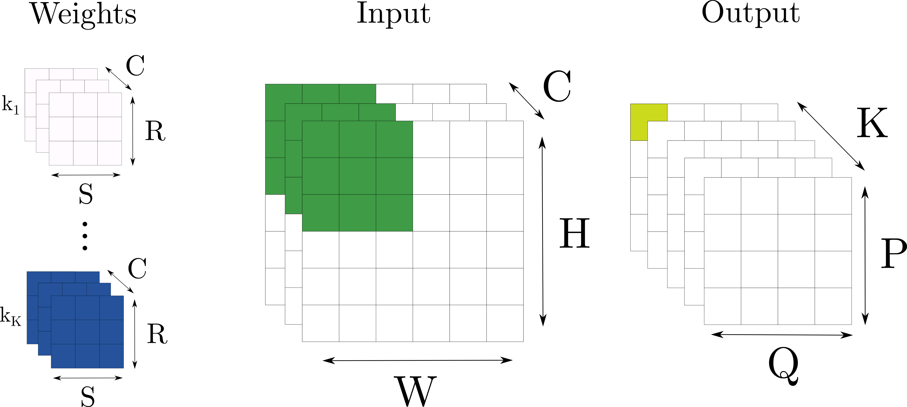
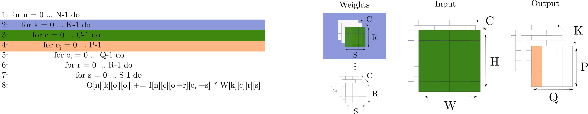
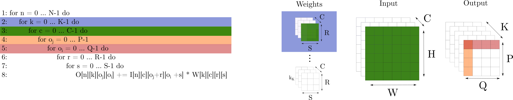
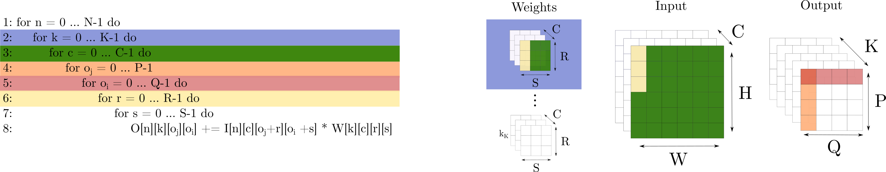
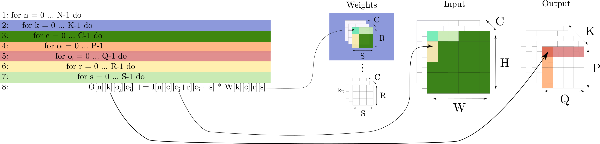

I stumbled across this paper a few months ago and mostly skimmed through the text, nodding along happily and pretending that the code excerpts didn't exist. I decided to revisit some of the nitty gritty details recently and realised that code excerpts weren't gonna cut it; I stood by my trusty whiteboard and drew some blobs until I felt comfortable with it all. If you're anything like me, then stuff that takes place in any dimension higher than three takes a few iterations of staring at pictures, code, pictures, code to understand.
So I've decided to write a couple of blog posts, in the style of this excellent tutorial on optimising SGEMM (featuring pictures and code) for GPUs. I'm going to step through all of the algorithms and map them to (hopefully) intuitive diagrams.
Copied directly from the paper, here is the algorithm for direct convolution. This is our starting point, so let's take some time to understand exactly what's going on (note also that I'm ignoring strides for now for simplicity).
I've seen convolution expressed explicitly like this a few times now (usually in codebases it is far less nested) but it still terrifies me. I'll try to link this with some graphical intuition; I find the most useful thing here to be considering single images in the minibatch, so that's what I'll do now.
We have a set of K kernels, which form our weights (also sometimes called filters, channels etc.). We convolve each of these K kernels with our input which has spatial dimensions HxW, and C feature maps. Each kernel produces its own feature map, meaning if we have e.g. 5 kernels then our output is PxQx5.
Take a second to align these labels with the labels from the algorithm above, and imagine that we have a function that performs 2D convolution for us (e.g. takes a 1x3x3 kernel and convolves it with a 1x224x224 input image.)
for batch in batches
for output_channel in K
for input_channel in C
do 2D convolutionDuring training we often consider batches of N images, but again I'm going to pretty much ignore this for the sake of simplicity for now.
Convolution involves sliding the kernel through the input, taking the dot product of all of the elements at each location. For example, for the first kernel, step 1 looks like this:
The blue cube is multiplied by the green cube, producing the yellow square on the right. Then the filter gets moved to the next spatial location:
We have taken two dot products so far and you can see that width-wise the kernel can only move two more spaces - this is where P and Q come from. Sometimes, to maintain the size of representations we will perform some padding, but you can go ahead and add that to the list of things I'm not considering for the sake of simplicity.
Once we're done with this kernel, we move on to the next and repeat, until we reach the last kernel:
So, now you've seen convolution as both pictures and code, I'll go over it one more time and make the link more explicit.
Remember, I'm ignoring batching and leave the extension of these figures as an exercise for the reader ;)
At step 1, we iterate over the list of kernels K = [k1,k2,...,kK].
Since this is the first iteration, we will take the first kernel and move to line 3. The kernels are RxS spatially, with depth C, which means we select c1 from C = [c1,c2,...,cC]. We now iterate over each RxS spatial dimension, selecting one at a time:

Note that the depth of the kernel corresponds to the depth of the input. Next up: how many times should we perform the convolution in the y dimension of the output? I.e. how many times are we going to slide to the right?
And how many in the x dimension? I.e. how many times are we going to slide down?
For each of these slides, we are going to need to loop over the 3x3 kernel to get each of the 9 elements. The kernels have a y dimension:
And finally, an x dimension:

Probably the most confusing bit of this is I[n][c][o_j + r][o_i + s]. Just think that o_j and o_i give us the top left hand corner of the patch in the image we are convolving with, and r and s give us offsets in the x and y dimensions.
Soo hopefully now you're familiar with all of the notation and you have some geometric + practical intuition for how convolution is performed directly.
Coming up next is vectorisation and register blocking.